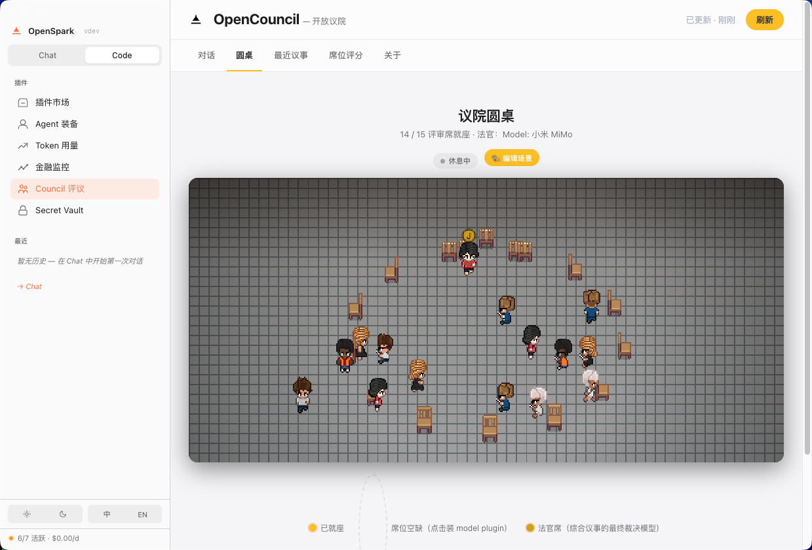

接入一次真实循环
可以是 OpenCouncil 评议、RAG 回答、support agent 回复、coding-agent PR 或一次失败 eval。
不止评测分数。AI Judge 把 OpenCouncil 里的席位、分歧、证据、人工裁决和下一轮控制，整理成可转发、可复盘、可接入工作流的 audit packet。

循环工程的关键不是让人继续点按钮，而是把人放到架构师位置：定义什么时候跑、什么时候停、谁来签字、下一轮能做什么。
可以是 OpenCouncil 评议、RAG 回答、support agent 回复、coding-agent PR 或一次失败 eval。
把每条 claim 对齐 source、judge disagreement、人工 verdict，避免“看起来合理”的循环继续扩大风险。
不是只给分，而是输出 approve、rewrite、rerun、escalate 或 hold loop 的控制结论。
团队仍然要追问：到底哪条 claim 有风险？哪个席位不同意？这轮循环要不要继续？
trace长工具日志rubricfaithfulness lowreviewer动作不清楚packet 会说明什么坏了、哪些证据能保留、谁需要签字，以及下一轮循环被允许做什么。
C3unsupported enterprise refund claimC5contradicted SLA guaranteenext_runrewrite + human gate首页负责讲清楚价值；JSON packet 才是真正能进入集成、review queue、GitHub issue 和未来 API 的操作面。
{
"loop_id": "support-policy-enterprise-refund",
"trigger": "customer_support_ticket",
"audit": {
"claim_failures": ["C3", "C5", "C6"],
"lowest_judge_score": 0.51,
"primary_failure_mode": "policy overclaim"
},
"human_verdict": {
"decision": "hold_loop",
"reason": "Correct facts were turned into guarantees."
},
"next_run": {
"action": "rewrite_then_rerun",
"requires_human_gate": true
}
}
AI Judge 不替代 eval stack。它把被选中的失败循环包装成产品、研究、客服、工程、合规都能读懂并接手的审计包。
最低成本的验证就是一个真实 case：一条 trace、一个 RAG answer、一份 coding-agent PR、一次 support reply，或者一条失败 eval。